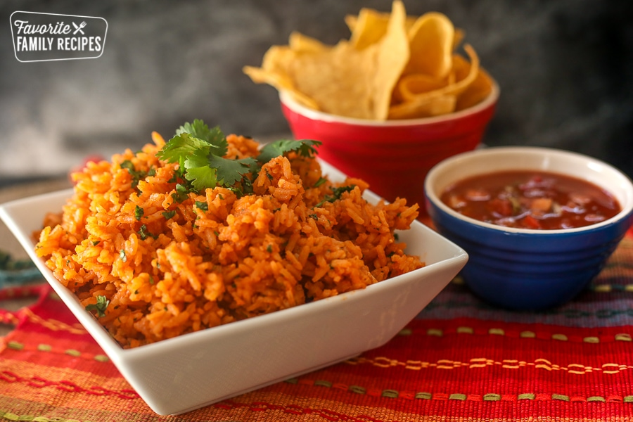

Restaurant Style Mexican Rice

This is certainly one of the rice recipes out there! When paired with either the taco or burrito
recipe, you will certainly have an unstoppable dish!
Ingredients
- 3 tablespoons vegetable oil
- 1 cup long grain rice uncooked
- 1 teaspoon minced garlic
- ½ teaspoon kosher salt
- ½ teaspoon cumin
- ½ cup tomato sauce
- 14 ounces chicken broth
- 3 tablespoons fresh cilantro finely chopped
Steps
- Heat oil in a large sauce pan over medium heat. Add the rice and gently stir until rice begins to lightly brown.
Add the garlic, salt, and cumin and stir the rice til it looks golden
- Add the tomato sauce and chicken broth and turn the heat up to medium high. Bring the mix to a boil then turn the
heat to low and cover the pan with a lid. Simmer for 20 to 25 minutes.
- Remove from heat and fluff with a fork, then stir in chopped cilantro.
Nutritional Facts
Per Serving: Calories: 183kcal Carbohydrates: 26g Protein: 3g Fat: 7g Saturated Fat: 6g Sodium: 545mg
Home